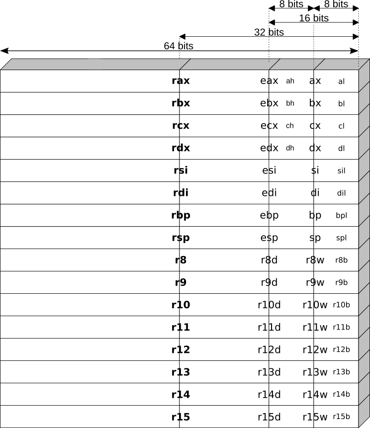
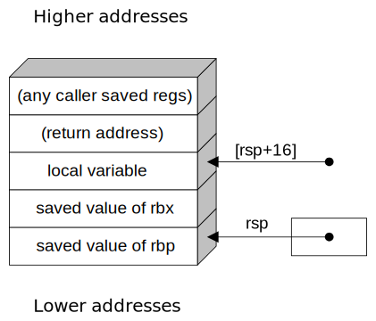

CS 2150 Roadmap
Data Representation | Program Representation | |||||
| string int x[3] char x 0x9cd0f0ad 01101011 |
Objects Arrays Primitive types Addresses bits |
Java code C++ code C code x86 code IBCM hexadecimal |
High-level language Low-level language Assembly language Machine code |
|||
History of x86

|
|
IBCM vs. x86: Registers
Declaring Variables in x86
|
Directives
|
|
Addressing Memory
|
Incorrect: (why?) |
|
Memory:
| |||||||||||||||||||||||||||||||||||||||||||||||
A code block in both C/C++ and Assembly
C/C++ code: |
Assembly code: |
Stack Memory Visualization for myFunc
This is just before the call opcode is invoked.
| ↑ | value of rdi | ← rsp | ||
| To higher addresses | ||||
| (to 0xffffffff) | ||||
| To lower addresses | ||||
| (to 0x00000000) | ||||
| ↓ |
Stack Memory Visualization for myFunc
This is just after the call opcode is invoked.
| ↑ | value of rdi | |||
| To higher addresses | return address | ← rsp | ||
| (to 0xffffffff) | ||||
| To lower addresses | ||||
| (to 0x00000000) | ||||
| ↓ |
Callee Rules (Prologue)
- Save callee-save registers
- rbx, rbp, r12-r15
- only need to do this if callee intends to use them, otherwise, no need to save their contents
THEN, perform body of the function
Stack Memory Visualization for myFunc
This is just after the caller invokes the call opcode.
| ↑ | value of rdi | |||
| To higher addresses | return address | ← rsp | ||
| (to 0xffffffff) | ||||
| To lower addresses | ||||
| (to 0x00000000) | ||||
| ↓ |
Stack Memory Visualization for myFunc
This is just after the callee invokes the sub rsp, 8 opcode.
| ↑ | value of rdi | |||
| To higher addresses | return address | |||
| (to 0xffffffff) | local var (result) | ← rsp | ||
| To lower addresses | ||||
| (to 0x00000000) | ||||
| ↓ |
Stack Memory Visualization for myFunc
This is after the myFunc() prologue is completed.
| ↑ | value of rdi | |||
| To higher addresses | return address | |||
| (to 0xffffffff) | local var (result) | ← [rsp+16] | ||
| value of rbx | ← [rsp+8] | |||
| value of rbp | ← [rsp] | |||
| To lower addresses | ||||
| (to 0x00000000) | ||||
| ↓ |
|
|
||||||||||||||||||||||||||||||||||||||||
Activation Records
|  |
Consider this subroutine
void security_hole() {
char buffer[12];
scanf ("%s", buffer); // how C handles input
}The stack looks like (with sizes in parenthesis):
| rsi (8) | rdi (8) | buffer (12) | ret addr (8) |
- Addresses increase to the right (the stack grows to the left)
- What happens if the value stored into buffer is 13 bytes long?
- What happens if the value stored into buffer is 20 bytes long?
- We overwrite the return address!